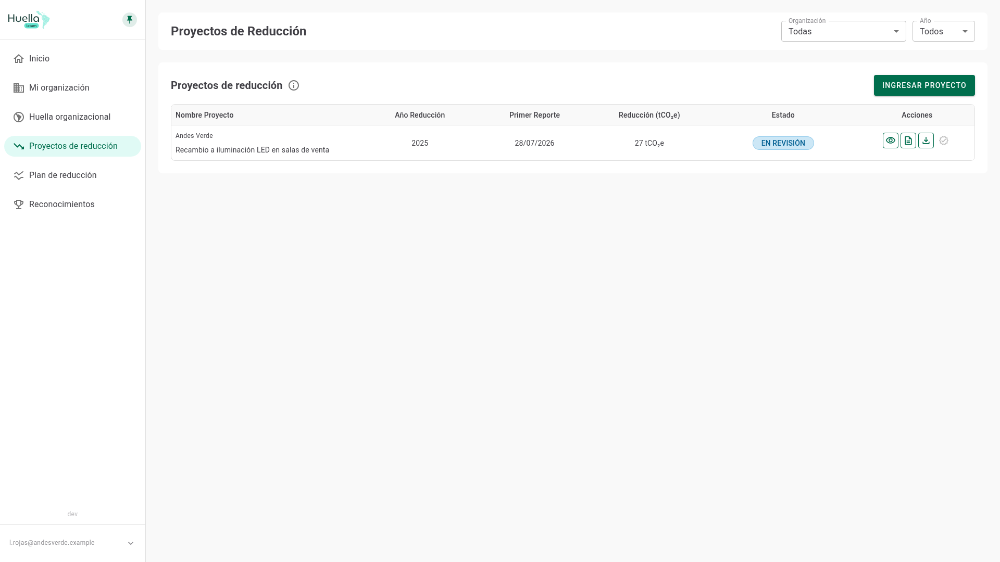
Reconocer las dos condiciones que tu organización debe cumplir —estar inscrita y tener una huella con reconocimiento de verificación— y saber qué hacer si falta alguna.
Completar el formulario con los datos base, los GEI considerados y los escenarios base y de proyecto, guardando avances como borrador.
Reunir los documentos exigidos, aceptar la declaración jurada y seguir el estado de tu postulación hasta el resultado.
Es una medida concreta ya implementada que baja las emisiones de una fuente de tu huella. En este módulo la registras, la respaldas con documentos y la postulas al Reconocimiento de Reducción.
Si todavía no perteneces a ninguna organización, en lugar del listado verás este aviso con un botón que te lleva a crearla. Y aunque ya pertenezcas a una, la plataforma vuelve a comprobar que esté inscrita en el momento de postular.
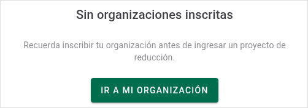
El reconocimiento de verificación es el sello oficial de tu huella. Sin al menos una huella con ese sello aprobado, el módulo sigue bloqueado aunque tu organización ya esté inscrita.
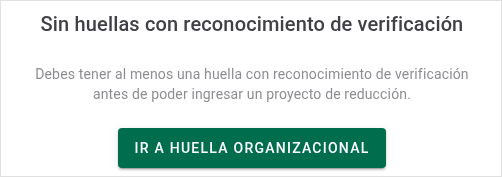
Cumplidos los requisitos, la pantalla reúne los proyectos de todas las organizaciones a las que perteneces, en cualquier estado. Los proyectos eliminados no aparecen aquí.
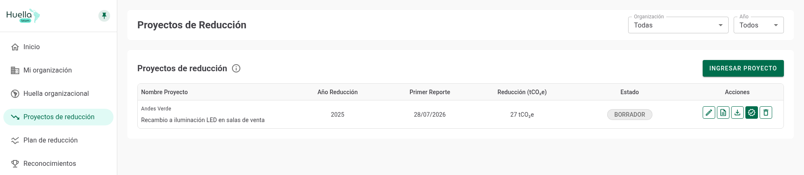
1 2 3 4 5 6Los dos selectores del encabezado se combinan entre sí: al elegir una organización, la lista de años se ajusta a los proyectos de esa organización.
| Columna | Qué muestra |
|---|---|
| Nombre Proyecto | La organización a la que pertenece y, debajo, el nombre que le diste. |
| Año Reducción | Año de la huella asociada. Un guion indica que el proyecto todavía no tiene año registrado. |
| Primer Reporte | Fecha en que el proyecto quedó registrado en la plataforma. |
| Reducción (tCO₂e) | Escenario base menos escenario del proyecto. Muestra un guion si falta alguno de los dos. |
| Estado | Etiqueta de color con la etapa actual de la postulación. |
La última columna reúne los botones de la fila. Se habilitan según el estado, así que no siempre verás todos activos.
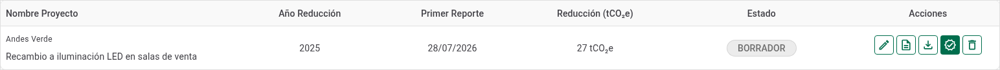
El formulario se abre a pantalla completa. Empieza por identificar el proyecto y la huella sobre la que se aplica: esa elección define el resto.
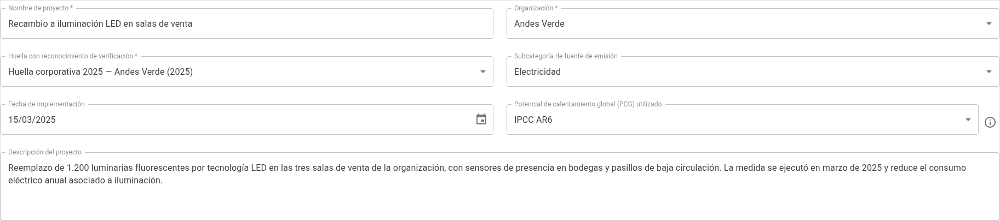
1 2 3 4 5 6 7Dos bloques declaran el alcance del proyecto: qué gases abarca la reducción y si esas emisiones ya se informan en otra parte.
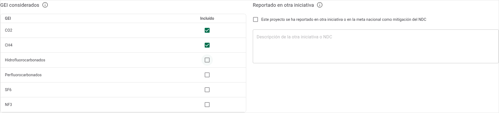
Aquí declaras el resultado. Ingresa los dos escenarios en tCO₂e y la plataforma calcula sola la reducción lograda.
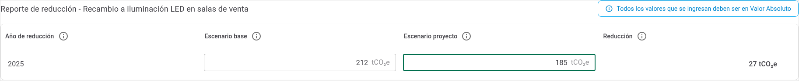
1 2 3 4 5Guardar y postular exigen cosas distintas. Puedes avanzar por partes: guarda apenas tengas lo mínimo y completa el resto cuando reúnas la información.
| Momento | Qué exige | Resultado |
|---|---|---|
| Guardar borrador | Solo nombre, organización y huella; lo que sí completes debe quedar sin errores. | Queda en Borrador y puedes retomarlo cuando quieras. |
| Postular | Todo el registro: fecha de implementación, descripción, subcategoría, PCG, al menos un GEI, el año de reducción y ambos escenarios. | Si falta algo, al pulsar Postular aparece un aviso con la lista de datos pendientes. |
Antes de postular, ten los respaldos a mano. El diálogo los lista numerados en la parte superior.
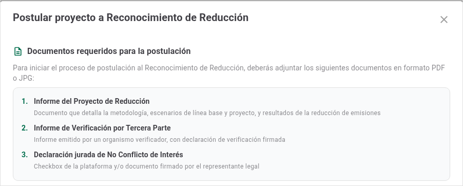
El diálogo cierra el proceso en tres gestos: adjuntar, declarar y enviar.
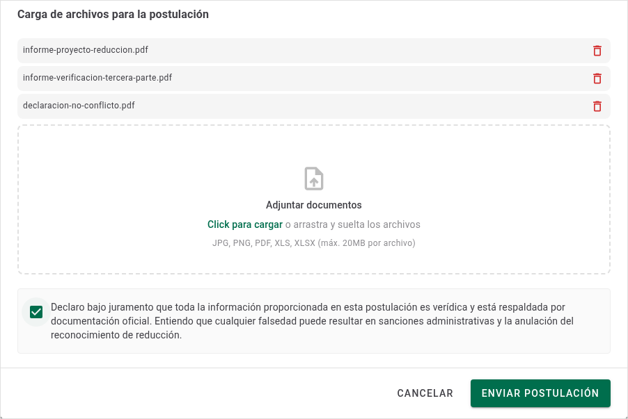
La etiqueta de la columna Estado indica en qué etapa va tu proyecto y qué puedes hacer con él en ese momento.
| Estado | Color | Qué significa |
|---|---|---|
| Borrador | Gris | Aún no lo postulas. Puedes editarlo y eliminarlo; eliminarlo es definitivo. |
| En revisión | Azul | Enviada y en evaluación. No admite cambios y no puedes cancelarla. |
| Con observaciones | Ámbar | Vuelve a ser editable. Lee las observaciones en Historial, corrige y postula otra vez con los documentos actualizados. |
| Aprobado | Verde | Obtuviste el Reconocimiento de Reducción. El proyecto queda cerrado. |
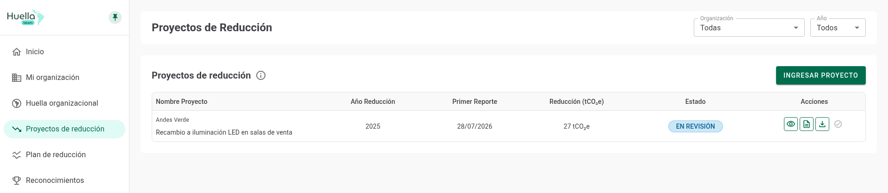